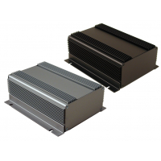
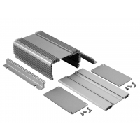

Project template containing the recommended board layout for Hammond Manufacturing 1455NHD160:
Black: 1455NHD1601BK - HM1425-ND
Unpainted: 1455NHD1601 - HM1424-ND
|  |  |
The "Dwgs.User" layer contains all critical dimmensions in milimeters[inches].
The "Edge.Cuts" layer contains the maximum board outline and holes to align with board standoffs.
PCB Preview: